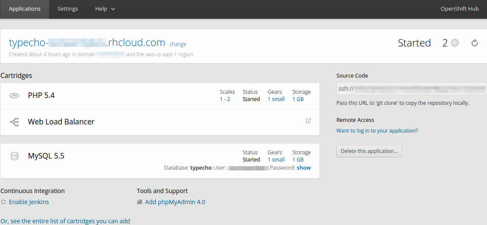
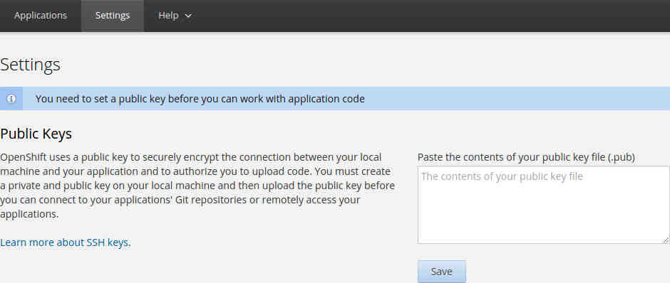

Preface
因为东西越来越多，感觉光用脑子记已经没法永久记住了，于是搭建个blog。
既然是第一篇博文，那就讲讲在OpenShift上搭建Typecho的过程吧。
准备工作
- 一个OpenShift帐号，免费帐号就够用。
开工
创建 OpenShift Application
登录到OpenShift。因为是新的帐号，所以OpenShift会提示你创建一个新的 Application，直接创建就好。
创建Application页面里有许多类型的Application，选择”PHP 5.4”就好。
接下来主要要填写的内容包括
Public URL: 用这个地址访问这个博客
其余的选项看看就好，然后点击”Create Application”，然后去泡一杯茶。
创建完成后浏览器会导航到刚创建好的Application的页面。
因为Typecho要用到数据库，我选择用MySQL数据库。那么，在页面上找到”Enable MySQL 5.5”并点击它，然后直接点击”Add Cartridge”。几秒钟后就添加好MySQL支持了。
以上步骤全部完成后，网页上大概应该是这样：

我又加了个负载平衡功能，我也忘了怎么加的了，不过这些功能都会在当前Application页面上有。
为 OpenShift 帐号添加 ssh key
此步骤是为了稍后安装Typecho时，连接OpenShift所用。
- 在页面上点击 Settings，然后应该像下面这样显示出来:
 - 用
ssh-keygen生成一份RSA公私钥，然后把公钥（也就是以.pub结尾的文件）的内容直接粘贴到上图右边的文本框里，然后点保存。注：Windows用户可以用PuTTY的
puttygen.exe来生成公私钥。
上传 Typecho 文件
首先到 Typecho on Github 下载一份Typecho备用。
执行命令
ssh-add 私钥文件名，把SSH私钥添加到本地，用来通过SSH登录OpenShift。注意：该步骤不适用于Windows，需改用PuTTY或类似的SSH客户端。第3步也是。
将远程服务器上的仓库clone到本地：
如下图，把Source Code下面的ssh://....复制出来，然后使用下面的命令将远程服务器上的仓库clone到本地：1
git clone ssh://....
注意：系统得装有 git.
切换目录到clone下来的仓库里，把之前下载好的Typecho压缩包直接解包到这里，然后执行下面的命令：
1
2
3git add --all
git commit -m "Install Typecho."
git push打开自己的网站（比如本文里就是
https://typecho-*****.rhcloud.com），准备接下来的安装步骤。如果打开网页出现 HTTP 50x 错误，稍等几秒再刷新就好了。
获取 MySQL 地址和端口号
MySQL的地址和端口号 将会在安装Typecho时候向用户索要。
注：下面将通过SSH登录OpenShift，Windows用户可使用PuTTY或其他SSH客户端来登录。
还是这张图，点击 “Want to log in to your application?”，然后会自动选中
ssh开头的一段文字，直接复制下来粘贴到终端里然后回车即可。若登录失败，用
ssh-add 私钥文件名添加私钥，然后再重试即可。执行下面命令来获得MySQL的地址和端口号：
1
2echo $OPENSHIFT_MYSQL_DB_HOST
echo $OPENSHIFT_MYSQL_DB_PORT输出结果大概会像下面这样：
1
2
3
4echo $OPENSHIFT_MYSQL_DB_HOST
blahblahblahblahblahblah-someone.rhcloud.com
echo $OPENSHIFT_MYSQL_DB_PORT
12345第一个输出的一长串字就是地址，第二个输出的数字就是端口号。然后把它们保存下来备用。
安装 Typecho
完成之前的步骤的后，网站已经可以打开了，点击”我准备好了，开始下一步”即可。
接下来Typecho索要要一些设定参数，包含如下：
参数名 怎么填 数据库适配器 不管哪个，只要是MySQL的就行 数据库地址和密码 之前的步骤里找到的地址 数据库名 在当前Application的页面上可以找到 数据库用户名和密码 也在当前Application的页面上 登录密码 用来登录网站后台 邮件地址 博文有评论什么的都会发到这个邮箱 其余的没在上面表格里提到的，看看就好。
最后点击 “确认，开始安装”，不出意外的话，应该会提示安装成功。
至此，Typecho就算安装完成了。